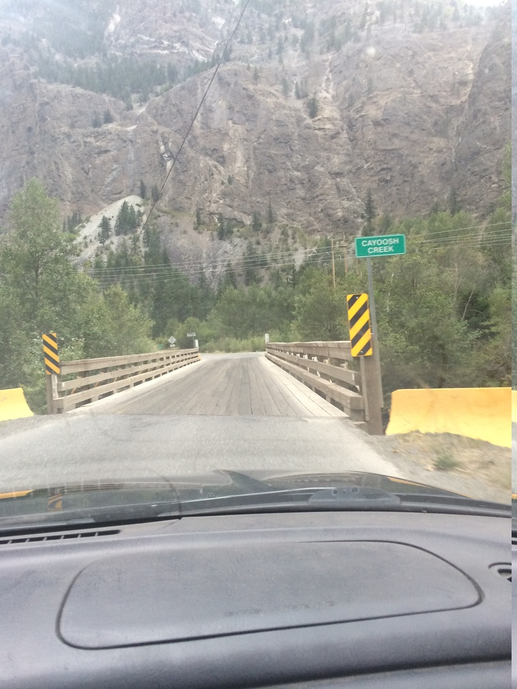
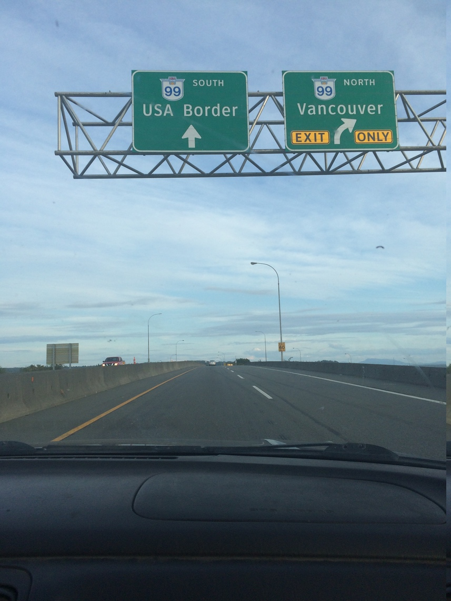

Driving, 4000 miles in!
Here's some shots of the driving we did in Canada. The Icefields Parkway calls it self one of the most scenic drives in the world! So it seemed appropriate to take a bunch of pictures from inside the car...
To get to Canada we had to cross the border.
We decided to cross on the east side of Glacier National Park, hoping that customs would be quick with no line. There wasn't much of a line, but we did get stopped, and the car got search very very thoroughly. Anyway, after a stern talking to about smuggling illegal things, the car getting searched, and the only thing found was our basil plant, we were on our way in Canada. (The custom official actually started cracking jokes once he decided that we were actually just 2 kids on a road trip.)
We quickly made it up to Calgary, met up with Eric and started in on a climbing adventure to Ghost River Valley.
In the distance you can see the mesa style cliffs we were climbing on. It reminded us all of southern Utah, only with stronger rock.
We found that Banff and Jasper had much more impressive glaciers than Glacier National Park. You'd find them in valleys, on peaks, everywhere!
On the way up to Malaligne lake south of Jasper, we found several goats hanging out by the road, they didn't seem too bothered by the cars.
 Another picture near the lake.
Another picture near the lake.
We did some hiking up near the lake, with the hope of doing the famous Skyline trail that starts from the same parking area the next day.
But nature had other plans...
As we were hanging out at a lake about 10 miles away from Malaligne, we started to see a huge plume of smoke form in the direction of Malaligne. It turns out about 30 minutes after we left the lake a forest fire started right near the Malaligne lodge! As we were leaving our lake we saw a huge line up of cars on the road leaving Malaligne lake, they actually evacuated the lodge and closed the Skyline trail! If we were on the Skyline trail, there was a chance we could have gotten helivaced out, which would've been a good story I'm sure.
After leaving Jasper the next day we decided to leave the smoke filled valley and head west out of the National Park and towards British Columbia. Our first stop was Mt. Robson, which is the most prominent peak in the Rockies. We had hoped to do some backpacking with Riley who we met up with in Jasper, but due to the smoke we decided to just do a day hike. It really is an incredible peak!
After camping near Robson, we started driving 99 towards the coast. Parts of 99 are well developed and sometimes even 4 lanes, other parts less so.
Here we found a few washed out 1 lane sections with signs just saying to "Use Caution"
 Quite a few times you end up on 1 lane wooden bridges. As you can see, the entire time the view is fantastic!
In Vancouver we drove across that bridge! It is apparently a very famous bridge that I forgot the name of.
 After a day spent in Vancouver, we found signs for 99/USA Border and headed that way!
This crossing went much smoother.
Now we're in Washington enjoying the beach!
Next time will have some slightly less cell phone quality shots, but this seemed like a fun perspective for a post!